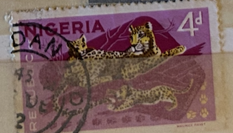
| SOURCE | TITLE| IMAGE MATCH | click to source page |
| HipStamp | Nigeria - 1965 - Scott #189 - used - Leopard | Africa - Nigeria, General Issue Stamp / HipStamp | 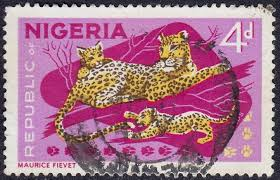 |
| eBay | Used Nigerian Stamps 1960-Now for sale | eBay | 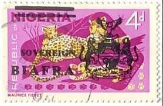 |
| eBay UK | Nigeria, 1969-72, SG#224, 4d Leopards, Definitive, Used #F8682 | eBay UK | 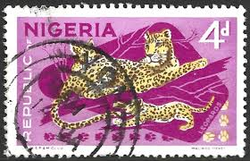 |
| eBay | NIGERIA 189 (SG177) - African Wildlife "Leopard" 1966 Printing (pa80517) | eBay | 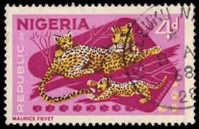 |
| This is me live at the Freedom Park, the exhibition center of Nigeria @60. Different pictures of some Nigeria heroes both men and women were showcased by @the_vine_studio. They are heroes who | 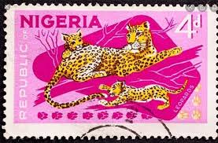 | |
| HipStamp | Nigeria 1965 - 4d Leopards (Republic Definitives) - SG176 used | Africa - Nigeria, General Issue Stamp / HipStamp | 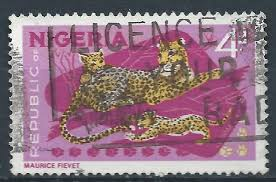 |
| lastdodo.com | Overprint Sovereign on stamps of Nigeria 4 (1968) - Biafra - LastDodo | 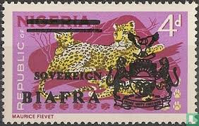 |
| eBay UK | Block Nigerian Stamps (1960-Now) for sale | eBay UK | 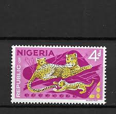 |
| BidCurios | Nigeria - Used Stamp - Cheetah - Wild Life - (B-001/Q3)p - BidCurios | 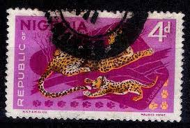 |
| Colnect | Stamp: Leopard (Panthera pardus) (Biafra(Definitives from Nigeria with overprint SOVEREIGN/BIAFRA) Mi:NG-BI 8,Sn:NG-BI 8,Yt:NG-BI 13,Sg:NG-BI 8 📮 | 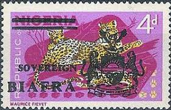 |
| LastDodo | Katachtigen postzegelcatalogus - LastDodo | 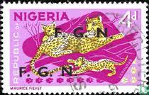 |
| guernicamag.com | Africa – Guernica | 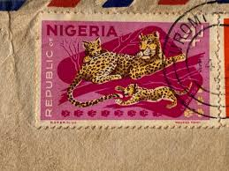 |
| Etsy | Nigeria Stamp - Etsy Canada | 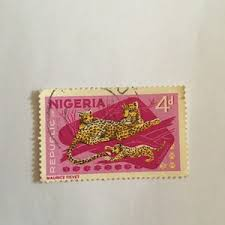 |
| Мешок | 1965 г. Нигерия. (NIGERIA). Фауна. Птицы.» на Мешке #хищники | 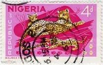 |
| Todocolección | níger 1972 caballos pferde carreras de camellos - Buy Antique stamps of Niger on todocoleccion | 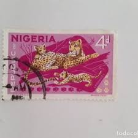 |
| 美篇 | 尼日利亚·野生动物题材邮票高民祥收藏 | 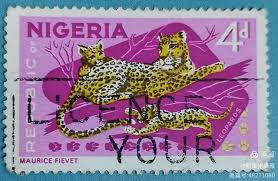 |
| Alamy | Nigeria Postage Stamp - Leopard (Panthera pardus Stock Photo - Alamy | 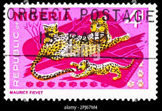 |
| Dreamstime.com | 223 Nigeria Set Stock Photos - Free & Royalty-Free Stock Photos from Dreamstime | 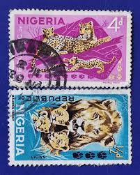 |
| eBay | African Big Wild Cats Stamp Leptailurus Serval Panthera Leo S/S MNH #5132-5135 | eBay | 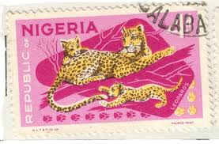 |
| HipStamp | Nigeria Scott 297 MH* cheeta stamp CV$3.75 | Africa - Nigeria, General Issue Stamp / HipStamp | 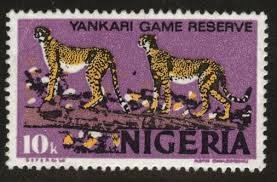 |
| eBay UK | Nigeria, 1965-6, SG#177a, 4d Leopard, Definitive, P14x13.5, Used Pair #F8634 | eBay UK | 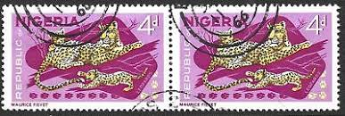 |
| eBay UK | Nigeria 1966 4d Leopards - block of 4 MNH set S.G. 177 | eBay UK | 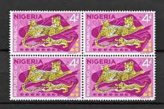 |
| eBay | NIGERIA #189 1965 4p LEOPARD & CUBS MINT VF NH O.G | eBay | 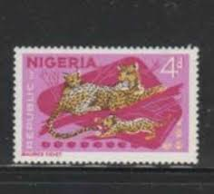 |
| eBay UK | Nigeria, 1965-6, SG#177a, 4d Leopard, Definitive P14x13.5 Used Strip of 3 #F8635 | eBay UK | 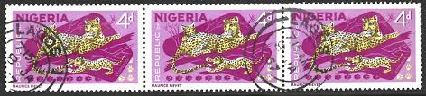 |
| Alamy | NIGERIA - CIRCA 1973: a stamp printed in Nigeria shows Modern Docks, circa 1973 Stock Photo - Alamy | 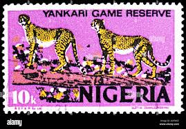 |
| eBay UK | Nigeria 4d | eBay UK | 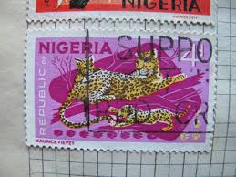 |
| Shutterstock | Nigeria Circa 1946 Stamp Printed Nigeria Stock Photo 42083485 | Shutterstock | 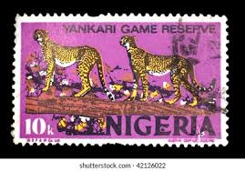 |
| Todocolección | dos sellos 10 kobo nigeria - motivo yankari gam - Buy Stamps from other African countries on todocoleccion | 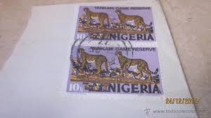 |
| eelke.li | Taxonomy of Stamps, Country Nigeria | 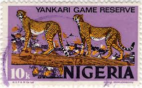 |
| HipStamp | Antonios Philatelics / HipStamp | 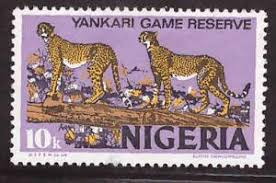 |
| eBay | Nigeria stamps - Cheetah (Acinonyx jubatus) (x2) 10 Nigerian kobo 1976 Sg:NG 344 | eBay | 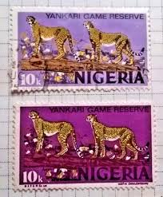 |
| PicClick UK | STAMP NIGERIA SG344 1973 10k Yankari Game Reserve Cheetahs Used £0.16 - PicClick UK | 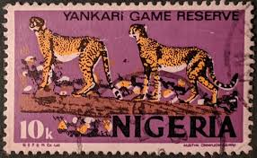 |
| ebid.net | Samantha Brown draws Santa - GB Christmas stamp - c. 1981 used - see scan on eBid United Kingdom | 183450451 | 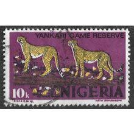 |
| Shutterstock | Nigeria Stamp: Over 505 Royalty-Free Licensable Stock Photos | Shutterstock | 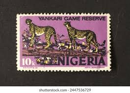 |
| eBay | Nigeria #297 MNH block of 4 - 1973-74 10k Yankari Game Reserve SCV $15 | eBay | 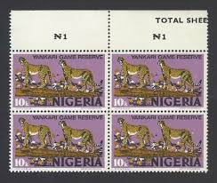 |
| HipStamp | NIGERIA =1973/4 10k Yankari Game Reserve `Cheetah` x 4 pairs. Cancels, etc. (e) | Africa - Nigeria, Stamp / HipStamp | 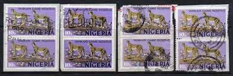 |
| HipStamp | Nigeria #297Aa 1976 10k Leopard, Yankari Game Reserve Mint VF NH O.G | Africa - Nigeria, General Issue Stamp / HipStamp | 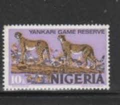 |
| Alamy | PAPUA NEW GUINEA - CIRCA 1980: A stamp printed in Papua New Guinea shows a cheetah, circa 1980 Stock Photo - Alamy | 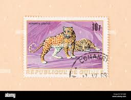 |
| Alamy | Old nigeria postage stamp hi-res stock photography and images - Alamy | 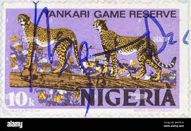 |
| An incredible postage stamp from the days when wild cheetahs still occurred in #Nigeria…. A powerful insight into a tiny segment of #NigerianWildlife history. #WACN or West African Conservation Network, however you | 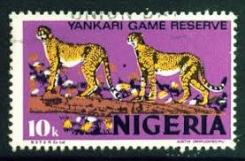 | |
| Shutterstock | Nigeria Circa 1973 Postage Stamp Printed Stock Photo 76952038 | Shutterstock | 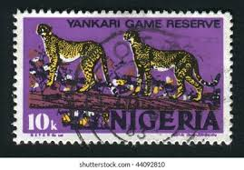 |
| Etsy | Vintage Nigeria Stamp Art Print: Yankari Game Reserve Tiger Photo - Etsy Norway | 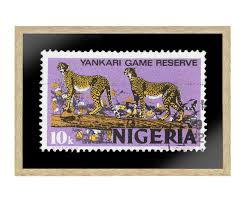 |
| eBay UK | NIGERIA STAMP SG296 10k YANKARI GAME RESERVE, 1973, U/M & V.F.U. | eBay UK | 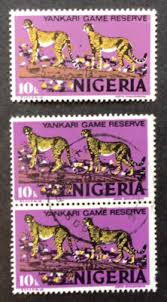 |
| Stamp Collecting Blog | Nigeria 1973 definitive postage stamps – pt. III | 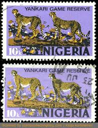 |
| Alamy | 25 march 1971 hi-res stock photography and images - Alamy | 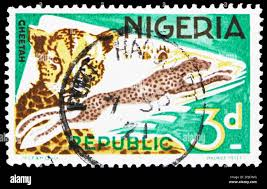 |
| eBay | Machine Cancel Birds Stamps for sale | eBay | 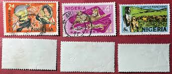 |
| State of Oman 1973. wild animals . | 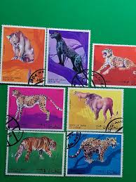 | |
| Shutterstock | Savannah Stamp: Over 292 Royalty-Free Licensable Stock Photos | Shutterstock | 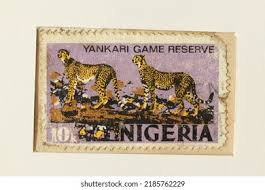 |
| eBay | Multi-Color Nigerian Stamps (1960-Now) for sale | eBay | 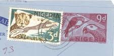 |
| HipStamp | Nigeria # 297 - Yankari Game Reserve - used -{GR41} | Africa - Nigeria, General Issue Stamp / HipStamp | |
| Dreamstime.com | 930 Animal Burundi Stock Photos - Free & Royalty-Free Stock Photos from Dreamstime | |
| iStock | Nigerian Stamp Shows A Cheetah Stock Photo - Download Image Now - iStock | |
| Colnect | Stamp: East African Leopard (Panthera pardus) (Eritrea(Wild Animals) Mi:ER 262,Sn:ER 352e,Yt:ER 437 📮 | |
| HipStamp | Nigeria 185, 188-189, 192 U Animals, Mammals, Birds (B) | Africa - Nigeria, General Issue Stamp / HipStamp | |
| BidCurios | Nigeria - Used Stamp - Cheetah - Wild Life - (B-001/Q3)b - BidCurios | |
| Shutterstock | Nigeria Circa 1965 Cancelled Postage Stamp Stock Photo 1937939416 | Shutterstock | |
| Shutterstock | Burundi Stamp: Over 2,102 Royalty-Free Licensable Stock Photos | Shutterstock | |
| Shutterstock | Cheetah Stamps: Over 201 Royalty-Free Licensable Stock Photos | Shutterstock | |
| eBay | Bulgaria Stamps CTO Cats Scott 3737-3742 (1992) Complete Set MNH | eBay |